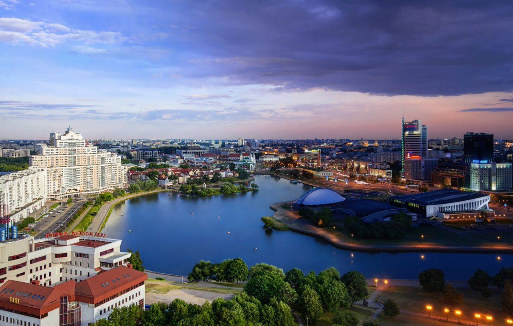

Минск
ㅤМинск, столица Беларуси, был удостоен звания города-героя за мужество и стойкость его жителей во время Великой Отечественной войны. Этот город стал символом сопротивления советского народа нацистской агрессии и сыграл важную роль в ходе войны.
ㅤИсторическая справка: оборона и оккупация Минска
ㅤВойна для Минска началась 22 июня 1941 года, когда немецкие войска начали операцию "Барбаросса". Город оказался на пути мощного наступления группы армий "Центр", и уже через несколько дней после начала войны он был оккупирован. Несмотря на стремительное продвижение противника, защитники Минска оказали упорное сопротивление.
ㅤㅤ1.ㅤОборона города (июнь 1941 года):
ㅤ•ㅤМинск был одним из ключевых пунктов обороны Западного фронта. Однако из-за внезапности нападения и превосходства противника в технике и численности советские войска не смогли удержать город.
ㅤ•ㅤБои за Минск были ожесточёнными, но к 28 июня 1941 года город полностью перешёл под контроль немецких войск.
ㅤㅤ2.ㅤОккупация (1941–1944 годы):
ㅤЗа три года оккупации Минск превратился в один из центров сопротивления нацистам. Жители города активно участвовали в партизанском движении, создавая подпольные организации и диверсионные группы.
ㅤВ окрестностях Минска действовали крупные партизанские отряды, которые вели борьбу с оккупантами, уничтожали коммуникации противника и спасали мирных жителей.
ㅤКак город был освобождён
ㅤОсвобождение Минска стало частью операции "Багратион", одной из крупнейших наступательных операций Великой Отечественной войны. 3 июля 1944 года войска Первого Белорусского фронта под командованием Константина Рокоссовского освободили город. Этот день теперь является государственным праздником в Беларуси — Днём независимости.
ㅤОсвобождение Минска было не только важной военной победой, но и символической. Город, который три года находился под оккупацией, снова стал свободным. Жители Минска встретили своих освободителей с радостью и слезами на глазах. Многие из них потеряли родных, дом и имущество, но их дух не был сломлен.
ㅤВклад Минска в победу над нацизмом
ㅤМинск сыграл огромную роль в победе над нацизмом. После освобождения он стал важным тыловым центром для советских войск. Здесь размещались госпитали, штабы и склады с боеприпасами. Город также стал базой для дальнейшего наступления советских войск на запад.
ㅤКроме того, Минск стал символом возрождения белорусского народа. Жители города активно участвовали в восстановлении разрушенной инфраструктуры и экономики. Они строили дома, заводы и дороги, чтобы вернуть городу его прежний облик.
ㅤПамять о подвиге Минска
ㅤПодвиг защитников Минска и его жителей не забыт. В городе созданы музеи, памятники и мемориалы, которые хранят память о тех днях. Например, Музей истории Великой Отечественной войны рассказывает о боях за город, партизанском движении и освобождении.
ㅤОсобое место занимает День независимости Беларуси, который отмечается 3 июля. В этот день в Минске проходят торжественные мероприятия, парады и концерты, посвящённые освобождению города.
ㅤЧто остаётся сегодня
ㅤМинск — это город, который показал, что даже в самых тяжёлых условиях люди способны объединиться ради общей цели. Подвиг его защитников и жителей стал примером мужества и стойкости для всего мира. Сегодня Минск — это современный город, который продолжает развиваться, но никогда не забывает свою историю.
ㅤЭтот город напоминает нам о важности стойкости, мужества и веры в лучшее будущее. Подвиг Минска навсегда останется в памяти как символ того, что любовь к Родине и желание жить могут преодолеть любые трудности.